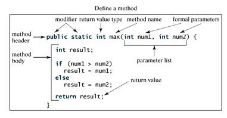

Topic 1 - Methods A method is: A unit of code which does a specific task. A subprogram or algorithm. A "black box" which may take in value(s) and may return a value. It should have one specific task that it is designed for. Example of the use of a method:  Image Source Code2Learn [Photograph]. Retrieved January 23, 2017 from www.code2learn.com/2011/11/java-methods-explaination.html